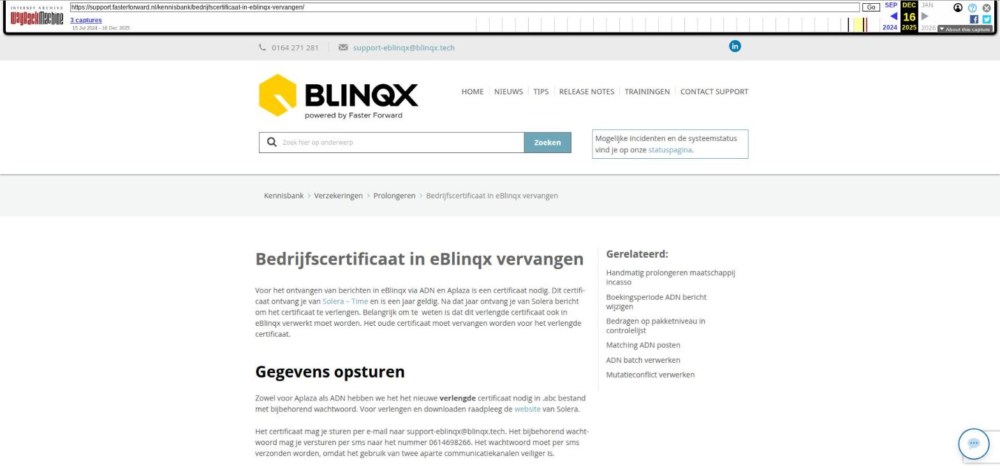

Zelf type urenregistraties aanmaken

Tekstinhoud
Zelf type urenregistraties aanmaken
Is er een type werkzaamheden die je niet nog niet kan selecteren bij het aanmaken van een registratie? Voeg dan een nieuw type urenregistratie toe. Zo kan je de bestede tijd vastleggen voor dit type werkzaamheden.
Let op: om dit uit te voeren heb je beheerrechten nodig. Mocht je deze rechten niet hebben dan kan je hiervoor een verzoek insturen naar support-eblinqx@blinqx.tech.
Nieuw type urenregistratie aanmaken
Koppel aan een activiteit
Nieuwe activiteit aanmaken
Activiteit koppelen aan product
Nieuw type urenregistratie aanmaken
Om een nieuwe registratie aan te maken ga je naar Beheer -> Urenregistratiebeheer -> Registraties.
Klik linksboven op '+' om een nieuw registratie type aan te maken. Je krijgt dan verschillende velden te zien.
Naam: vul een naam in. Dit is alleen een verplicht veld
Registratietype en Verlof types: hoef je niet in te vullen
Standaard registratie: hiermee kan je aangeven of dit registratietype standaard ingevuld moet worden als je bijvoorbeeld een registratie of e-mail aanmaakt. Dit in het veld 'Soort' van de registratie. Je kan maar één registratietype als standaard instellen. Stel je er geen als standaard in dan komt dit veld op 'Maak uw keuze' te staan
Koppel aan een activiteit
Daarna dient de aangemaakte registratie aan een activiteit te worden gekoppeld.
Ga hiervoor naar het tabblad Activiteiten en klik achter de gewenste activiteit op het wijzigingsicoon.
Klik vervolgens op het + icoon onder 'Gekoppelde registraties'.
Klik tot slot op de blauwe pijl achter jouw aangemaakte registratie type om deze te koppelen.
Nieuwe activiteit aanmaken
Staat de gewenste activiteit er niet tussen? Dan kan je deze aanmaken. Hiervoor ga je naar het tabblad Activiteiten. Klik op het plusicoon.
Vervolgens geef je de activiteit een naam en omschrijving. En je slaat op met het opslaanicoon.
Je klikt op het wijzigingsicoon achter de nieuwe aangemaakte activiteit. Je koppelt de activiteit aan een product. Dit door middel van het plusicoon wat staat onder 'Gekoppeld product'.
Het handigst is om hiervoor producten te gebruiken die speciaal zijn aangemaakt voor de urenfacturatie. De prijs die onder dit product staat ingesteld is bepalend voor de prijs die wordt berekend. Hier lees je hoe je een product kunt aanmaken en in kan stellen voor facturatie.
Daarna koppel je de gewenste registratietypes aan de activiteit. Dit door middel van het plusicoon onder gekoppelde registraties.
De gewenste registraties koppel je aan de activiteit door middel van de paarse pijltjes.
Activiteit koppelen aan product
Koppel de activiteit waar je de registratie aan gekoppeld hebt aan een product. Indien deze je niet koppelt dan wordt de activiteit en bijbehorende registraties niet zichtbaar bij het maken van een registratie.
Ga hiervoor naar het tabblad Producten.
Klik op het wijzigingsicoon achter het product waar je deze aan wilt koppelen. Klik onder 'Gekoppelde activiteiten' op het + icoon en klik op de blauwe pijl achter de desbetreffende activiteit waar jouw registratie onder valt.
Let op! Indien je de registratie altijd wilt gebruiken dien je de activiteit te koppelen aan 'Geen product'. Deze vind je boven aan de lijst producten.
Laatste update: 15 oktober 2025
Was deze informatie nuttig?
Ja Nee